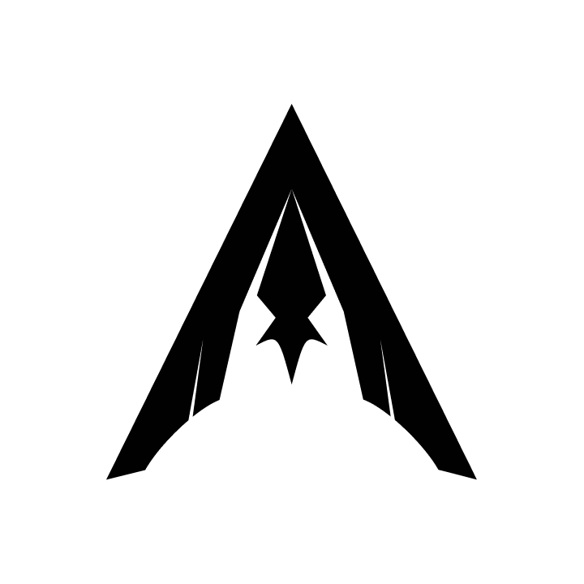

Thomas Hanxi Guo
Computer Science at the University of Waterloo
Business Administration at Wilfrid Laurier University
Welcome to my page!
Based in Toronto, Ontario, Canada
I am usually running between the two Waterloo universities as a CS/BBA Double Degree Student
I enjoy working with computer vision software and tinkering with used computer parts
Autonomy Software Developer at  Waterloo Aerial Robotics Group
First Year Representative at University of Waterloo Mathematics Endowment Fund
> Open to Winter 2027 Internships <
New info will be added to this site regularly. I am in the process of migrating my old site materials to this layout
Awards and Honours
Recipient of the $5,000 BMO Financial Group Undergraduate Entrance Scholarship
Recipient of the $2,000 President’s Scholarship of Distinction
Cineplex Consulting Case Competition Semifinalist
(Held) A 363-Day Duolingo Streak